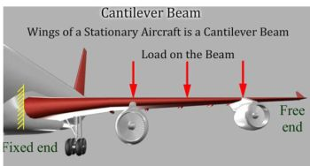

FREE VIBRATION OF CANTILEVER BEAM Theory Learning objectives After completing this simulation experiment one should be able to Model a given real system to an equivalent simplified model of a cantilever beam with suitable assumptions / idealisations Calculate the stiffness of a real system which is assumed to be equivalent of a cantilever beam Determine the mass of the system actively participating in dynamics Determine the natural frequency of a given system equated to a cantilever beam Determine the influence of material properties like Youngs modules (E) and density ( ) in dynamics Determine the influence of cross section, length of cantilever beam in dynamics Cantilever Beam Introduction Look at the few of the real systems shown below,try to make suitable assumptions to deduce the system to a cantilever beam. An aircraft wing as a cantilever beamAn atomic force probe  A tower crane overhang is like a cantilever beam A double overhang folding bridge A system is said to be a cantilever beam system if one end of the system is rigidly fixed to a support and the other end is free to move. Vibration analysis of a cantilever beam system is important as it can explain and help us analyse a number of real life systems. The following few examples can be simplified to a cantilever beam, thereby helping us make design changes accordingly for the most efficient systems. To understand the effect of free vibration on the cantilever beam, we need to understand and calculate the following parameters. Stiffness of the cantilever beam. Mass of the cantilever beam. We can determine the stiffness of the system through simple equations from strength of material. Where K = Stiffness of system. (N/m) E = Young s Modulus of the material. () I = Area moment of inertia. () L = Effective length of Cantilever Beam (m) Assumptions made during modelling and analysis: The mass (M) of the whole system is considered to be lumped at the free end No energy consuming element (damping ) present in the system ie. undamped vibration The complex cross section and type of material of the real system has been simplified to equate to a cantilever beam The fundamental natural frequency , by definition is (radians/second) Since the cantilever beam is undergoing free vibration, the governing differential equation of the system considering undamped free vibration can be given by ; Lets try to understand these equations by doing a few simple simulations, go to next tab procedure to find out how to run the simulation to EXPLORE (expR) and to EXPERIMENT (expT). A talking tutorial or a self-running demo with narration can be seen at EXPLAIN (expN)


Free Vibration Of Cantilever Beam Procedure There Are Three Modes Of Simulation Provided (i) Explain (expN) (ii) Explore (expR) And (iii) Experiemnt (expT) Explain (expN): The Simulation Is Explained With Narration, How To Use The Simulation, It Is A Self-Running Demo Or A Talking Tutorial. Explore (expR): Where In The User Is Allowed To Vary All The Parameter And Try Out How The Result Is Varying And Explore All The Possible Combinations. Experiment (expT): A Selected Few Parameters Are User Modifiable And Few Parameters Are Set By The System. Then The User Is Asked Run The Experiment And Based On The Observation, Find Out The Numerical Value Of The Given Parameter And Submit The Results. The System Checks The Correctness Of The Value Entered. Aim Of The Experiment: Determine The Natural Frequency Of A Given Beam, Repeat The Experiment For Various Cross Sections And Material Combination Along With Different Length Of The Beam. Procedure To Conduct The Experiment: The Following Parameters Can Be Changed In The Simulation Platform: Cross Section Of The Cantilever Beam. Material Of The Cantilever Beam. User Can Choose Own Material And Provide Required Material Property Effective Length Of Cantilever Beam. The Results That We Arrive At Are: Natural Frequency Of The System. In The Explore (expR) Mode Of Simulation For Any Given Combination Of Material, Cross Section And Beam Length, System Calculate The Natural Frequency And Give To The User. In The Experiment (expT) Mode, User Can Choose Material, Cross Section And Length Of The Beam, The System Calculates Mass And Area Moment And Display, User Is Expected To Calculate The Natural Frequency And Enter The Calculated Value And Submits The Answer. The Correctness Of The Answer Will Be Informed To The User. Observation Slno Cross Section Section Property (b,h, Or Diameter ) Length Young’s Modulus (E) Density () Calculations Slno Area (A) Area Moment (I) Mass (M ) Stiffness (K) Natural Frequency (N) Inference And Conclusions {find Out How The Natural Frequency Varies With Each Of The Variables , And Write In Your Own Word The Collusion From The Experiment} Further Reading Beyond This Experiment: Effective Mass Of A Continuous System In An Experimental Set Up However, The Cantilever Beam Acts As A Continuous Mass System. Hence An Effective Mass For The System Needs To Be Calculated. By Referring To Http://Teaching.Ust.Hk, We Have Arrived At The Following Soln. For The Effective Mass. Where M= End Mass (sensing Element Etc.) (kg) = Mass Density Of Material Of Cantilever System (mass/unlit Length)(Kg/M) = Length Of The Cantilever Beam (m) Energy Consuming Element – Damping If We Introduce Energy Consuming Element Called Damping Then The Equation Get Modified To ; Where X = Displacement Of The Free End Of The Cantilever Beam (m) C = Damping Present In The System (Kg/s) = Damping Coefficient Of The System The Solution For Sdof Damped Free Vibration Governing Equation The Solution To The Above System Changes Depending On The Initial Conditions = Initial Displacement And = Initial Velocity, The Damping Coefficient = Let Us Consider The 3 Cases: Case 1: = Damping Coefficient < 1 (Underdamped Systems.) Where = Damped Natural Frequency = Case 2: = Damping Coefficient = 1 (Critically Damped Systems.) Case 3: = Damping Coefficient > 1 (Overdamped Systems.)